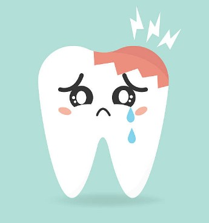

About Smile School
At Smile School, we teach kids why brushing and flossing are so important for keeping teeth healthy and strong. Every day, tiny bits of food and bacteria stick to your teeth and form plaque — a sticky film that can cause cavities and gum problems if not cleaned away. Brushing twice a day and flossing once a day helps protect your teeth, gums, and even your overall health!
What Happens If You Don't Brush?
| Problem | What Happens |
|---|---|
| Bad Breath | Food particles and bacteria in your mouth can create unpleasant odors, leading to bad breath. |
| Cavities | When plaque isn't removed, it produces acids that can eat away at the enamel of your teeth, leading to holes called cavities. |
| Gum Disease | Plaque buildup can irritate your gums, causing them to become red, swollen, and bleed easily. This is called gingivitis, the first stage of gum disease. |
| Tooth Loss | If gum disease progresses, it can damage the tissues and bones that support your teeth, potentially leading to tooth loss. |
